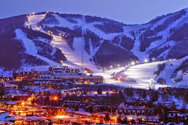

Best Snow on Earth
With an average of 500 annual inches of Utah dry, powder snow, you can be assured you will find great snow conditions on some of the most challenging slopes in the world at our 14 ski areas. Whether you like deep fluffy powder or nicely groomed slopes, Utah has it. The majority of the resorts are located within one hour of the Salt Lake City International Airport. Brian Head, in Southern Utah, is just 2.5 hours from Las Vegas. You can arrive in the morning and ski the afternoon. Most resorts have ski-in, ski-out accommodations so you can make best use of your vacation time. Stay at one resort (with ski-in, ski-out you never have to leave), or resort hop and ski several in one trip.
Park City
Park City Mountain Resort is a ski resort in the western United States in Park City, Utah, located 32 miles (51 km) east of Salt Lake City. Park City, as the ski resort and area is known, contains several training courses for the U.S. Ski Team, including slalom and giant slalom runs. During the 2002 Winter Olympics the resort hosted the snowboarding events and the men's and women's alpine giant slalom events. Opened in 1963, the resort has been a major tourist attraction for skiers from all over the United States, as well as a main employer for many of Park City's citizens. The resort was purchased by Vail Resorts in 2014 and combined the resort with neighboring Canyons Resort via an interconnect gondola to create the largest lift-served ski resort in the United States. During the ski season, most slopes and lifts are open from 9:00 a.m. to 4:00 p.m
Deer Valley
Deer Valley is an alpine ski resort in the Wasatch Range, located 36 miles (58 km) east of Salt Lake City, in Park City, Utah, United States. The resort, known for its upscale amenities, is consistently ranked among the top ski resorts in North America. Deer Valley was a venue site during 2002 Winter Olympics, hosting the freestyle moguls, aerial, and alpine slalom events. It also regularly hosts competitions for the International Ski Federation.
Little Cottonwood
Little Cottonwood Canyon is home to two ski areas, Snowbird and Alta. Both areas are well known for the amount of snow they receive each year with Alta averaging around 550 inches per year. The canyon is also well known for its backcountry skiing access, with over 300 named backcountry runs including one of the most prominent peaks in the canyon, Mount Superior.
Big Cottonwood
Big Cottonwood Canyon is a canyon in the Wasatch Range 12 miles (19 km) southeast of Salt Lake City in the U.S. state of Utah. The 15-mile (24 km)-long canyon provides hiking, biking, picnicking, rock-climbing, camping and fishing in the summer. Its two ski resorts, Brighton and Solitude, are popular among skiers and snowboarders. The canyon is accessed by The Big Cottonwood Canyon Scenic Byway (SR-190), which runs its length to Guardsman Pass at the top of the canyon, allowing travel to Park City in the summer months.